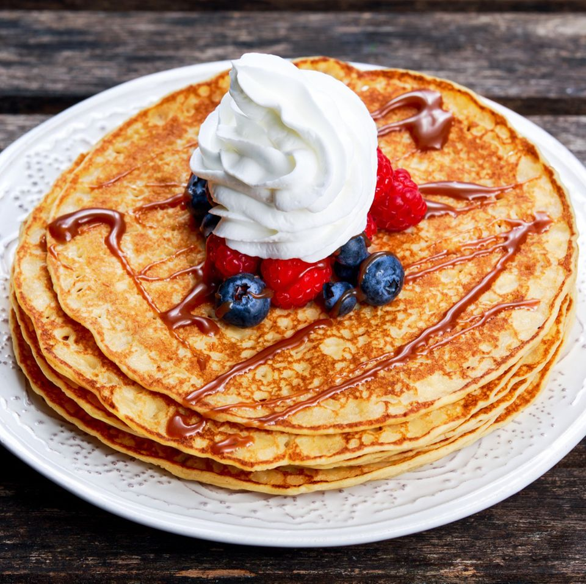

Empfohlenes Rezept: Pfannkuchen

Tauchen Sie ein in eine Welt voller kulinarischer Genüsse, von einfachen Abendessen bis hin zu raffinierten Wochenendfrühstücken. Entdecken Sie die Vielfalt an köstlichen Rezepten, die Ihren Gaumen verwöhnen und Ihre Kochkünste bereichern werden.